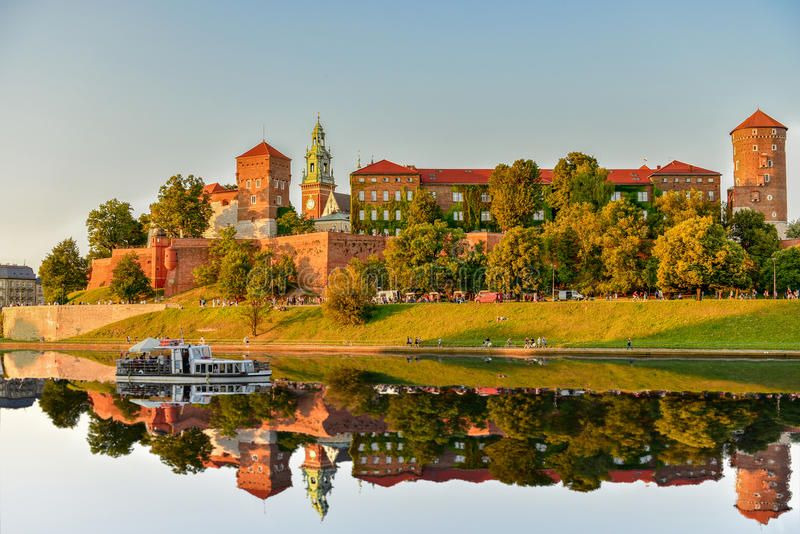
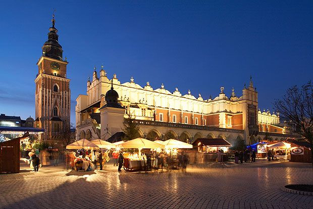
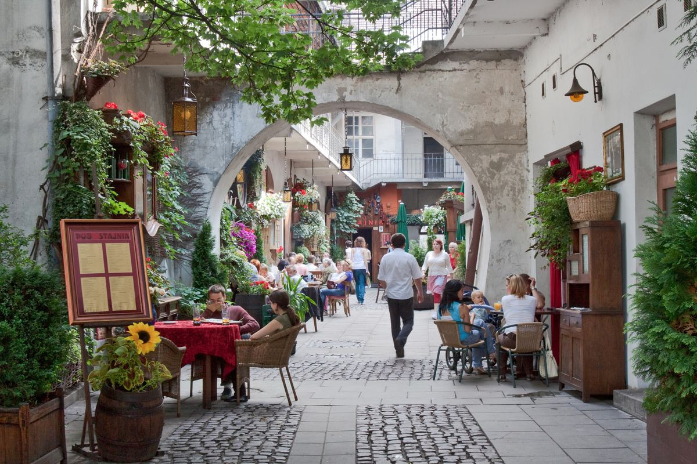

Pologne
Histoire
Cracovie fut la capitale royale de Pologne pendant près de 500 ans. Dominé par le majestueux Château du Wawel, colline sacrée des anciens Polonais, la ville abrite la plus grande place médiévale d'Europe : Rynek Główny. Classée au patrimoine mondial de l'UNESCO, Cracovie a preserves son âme historique à travers les siècles.
Culture
Cracovie est une vitrine culturelle de la Pologne. La ville accueille l'un des festivals de jazz les plus réputés d'Europe, tandis que sa scène culinaire propose des délices comme les pierogi (raviolis polonais) et le żurek (soupe au seigle). En décembre, son célèbre marché de Noël illumine la place du marché de ses lumières et de ses artisans.
Incontournables

Résidence des rois de Pologne, ce château Renaissance domine la ville et offre une vue imprenable sur la Vistule.

La plus grande place médiévale d'Europe, entourée de colorés immeubles historicistes et traversée par la famous Sukiennice.

Le quartier juif historique, aujourd'hui'un quartier vibrant avec ses synagogues, ses cafes et sa vie nocturne.
Infos Pratiques
Aéroport international Jean-Paul II, vols directs depuis l'Europe
Zloty (PLN), 1 EUR ≈ 4.3 PLN
Avril à octobre pour profiter des festivals et marchés